开场：学校不教的最重要一课
开场 · 介绍与立意
刘勇开场介绍：他和杨锦方、马化祥书记三人都是 1991 年考入北京大学，还是同一年在河南信阳陆军学院军训的中队战友。杨锦方 1996 年本科毕业后去清华读计算机硕士，再到美国读计算机博士，是美团创始团队成员，在美团历任多个岗位的高级管理职务，「美团有今天的成就，离不开锦方的重要贡献」。今天他专门从深圳赶回来。
杨锦方上台先纠正两处「夸大」：一，他没有拿到博士学位，是考了博士但中途辍学；二，他在美团的职位是副总裁。然后讲课程立意：
- 今天的内容跟「人」有关。他其实很纠结：一方面，他上大学时就对这个问题好奇，如果当年有人来讲，他一定会去听；另一方面，这个问题非常难讲，学校里没有任何一个系开「了解自己、了解他人」这样的课，大家的知识背景非常欠缺；而且人这个话题极其复杂，说浅了无关痛痒浪费大家时间，说深了又怕听不懂。怎么讲这个问题，他办了超（琢磨）了很长时间。
- 折中方案是分两个 40 分钟：第一部分讲「个体」，认识他人和认识自己（方法论是同一个）；第二部分讲「群体」，领导力和组织文化，即如何激发一个组织的活力和战斗力。学生组织比较松散，到了企业、事业单位这种组织形式，对协作的要求完全不一样，会复杂很多。
他特别说明：今天不是技巧课，因为人的问题比较特殊，没什么「方法」可以直接教。他认为最重要的其实是启发大家对这个问题的兴趣：为什么重要，以及它大概怎么解。如果讲了半天没有解法，等于什么也没有，也没啥意义。
第一部分本身的六个模块（对应课件 S01）：①杠杆，核心人才为什么比资金杠杆更重要；②企业家决策，关键选人为什么微妙、难外包；③天赋与模型，StrengthsFinder、Korn Ferry、德鲁克提供观察语言（我们现在只能做到心理学、还做不到脑科学，因为伦理限制不让你把大脑打开放探针，所以只有心理学模型可用）；④从战略到岗位，我们对人的要求是怎么来的；⑤段位与训练，初级、中级、高级如何进阶；⑥他的案例，如何选择一二级市场投资人。他说美团的案例可能有点过时，所以专门讲最近的案例；最希望做到的还是这堂课结束之后，大家把「对人的认识」当成一个重要问题，有少数人能在以后的注意分配上，持续在这个问题上去学习和思考。
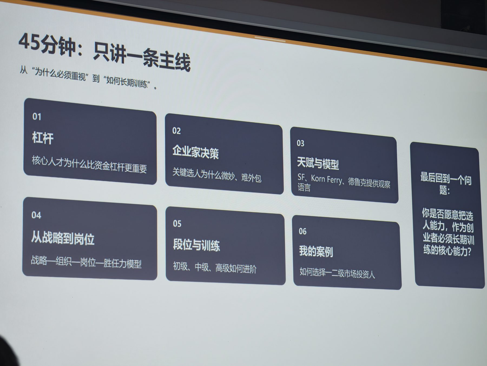
杠杆：核心人才为什么比资金更重要
上篇 · 选人
2.1只有最痛的经历，才能让人彻底反思
杨锦方先用自己开场（课件第一页写着「人生路上最昂贵的选择」）：大学毕业后他处于「愚昧之巅」的状态，非常自信，觉得好像自己什么都行，第一个选择是直接创业做公司，干了三年半，挣了钱但非常辛苦，和当初的预期差距很大。当时非常痛苦，但还是想：可能是我有什么地方技能不足？从学校毕业直接创业，经验不足是正常的，究竟是什么不足？
当时的判断是：学校没教过什么。他是无线电、计算机出身，没学过市场、没学过销售，于是决定去 Oracle（甲骨文）学销售，一待五年多。
- 他去的时候大家用一种异样的眼光看他：清华毕业的人到我们这来做销售？他大概是第一个。去了不久他就感觉去错地方了：他自我约束力比较强、能保证坚持下去，但很显然他并不享受，因为销售是跟人打交道的工作，需要很多洞悉人心的技巧，而他对别人的情绪不敏感，纯靠分析有用，但跟真正的高手比起来差距明显。那段时间他非常痛苦。
- 痛定思痛后的反思：问题出在「对我和世界的关系的认识不足」。这个世界是什么样的、世界的运行规则是什么样的、我是一个什么样的人、我在这个世界里面应该处在什么位置，这一连串问题没想明白，导致毕业后连续两次选择、差不多十年时间都是错的。痛定思痛之后，他决定把过去全都推倒重来，后来才加入王兴的创业团队，成为团队的一员。
- 他自评：虽然当时愚昧、自我认知非常错误，但他比很多同学好像还好一点，至少还知道反思、知道过错、知道要重新寻找定位，绝大部分同学可能一辈子到现在都没想过这个问题，对人生道路没有太多选择。
- 只有最痛的经历，才能让你彻底反思，真正跳出很多观念的束缚：我是谁、我当年是个什么样的学生、我应该成为一个什么样的人，很多东西其实都是错误的。如果你不会痛，你不会打破框框本身去思考一个问题。所以「以身入局」是最好的学习方式：做投资的人对这个问题有痛感，他们知道人没选好、工作没做好要赔好多钱。
2.2组织视角：人的杠杆比资金更强
- 在组织里面，企业资本非常重要：哪怕最伟大的创造都需要资金的杠杆来支持，没有钱你就找不到人，钱不够多你找不到好的人；故事不够伟大，钱的量级就上不去。资金的杠杆非常重要，但人的杠杆其实比资金更强。
- 组织杠杆的两端：一端是创始人自身。创业不是一天就结束了，要持续很长时间，在这个时间里每个人会怎么变化：他会学习、会成长、会经历挫折、会内心逐渐强大，这些都是变化的过程，而这个变化跟自我认知有非常直接的关系（自我认知正是后面要讲的学习敏锐度里最重要的一个维度）。另一端是认识他人：团队协作跟你怎么认识他人有很重要的关系；HR 的工作从招聘开始，你选谁固然受候选人池限制，但在你能选的范围里，能不能选到最好的、最适合你的，是要看本事的；选了之后，你把他放在什么位置、给他什么样的历练机会，结果差别也非常大。
- 十年二十年后差距极大：很多公司刚成立的时候差别都不大，就那么几个人、钱可能也不多，但放到 10 年 20 年以后，不同的小团队最后长成的样子差距极大，核心是人的因素。市场上的钱是争取来的，产品是人做出来的，人是最终的发动机、最重要的杠杆。
- 精力不可能平均分配：美团销售团队 2500 人的阶段，直接管 2000 人消耗巨大，后来摸索出来的经验就是「纲举目张」：抓住最重要的节点，管理工作才能有序高效。
2.3AI 时代的不确定性：我们只能争取确定性
杨锦方坦承：这些最伟大的公司故事，归根结底都跟钱有关系，但最后的根基是不是来自 AI，他现在无法预测，这就是我们这个时代的不确定性所在。他总觉得他大学毕业的时候还有巨大的确定性，大家知道会过得比上一辈人好得多（当然部分原因是上一辈人实在太惨了）；但今天大家面临的不确定性是，未来有可能极好，也有可能极差。他希望同学们能成为这个时代的受益者、成为好的那一端的人，所以我们只能在博弈里面尽量去争取确定性相对强的地方。
不要把心思放在那些你不能控制的事情上面。
张一鸣 · 杨锦方课上引用
「我自己是深入想过这个问题：哪怕未来结局难料，我们仍然要在今天把握机会、去争取一些确定性的东西。世界的不确定性不是我们个人能够控制的。做企业面临的每天都不确定，竞争对手要怎么干、他要发疯，你其实控制不了；只能做好自己、做好自己能够掌控的工作，这就是争取最大的确定性。」
2.4核心人才杠杆的三层作用
- 方向判断上的差异：核心岗位上的人做什么、给你反馈什么信息，是由人决定的。不同的人看到的问题不一样、重视的事情不一样，最后执行出来的结果差异巨大。
- 方法论的扩散和复制：组织在协同中摸索出的方法论（市场、产品、研发），需要核心节点上的人正确认识、知道怎么扩散和复制。
- 人才密度与时间复利：知识密集行业里，最好的人聚在一起会产生化学反应，想法、角度、碰撞对整个组织有强推动效应，尤其要抓住大玩家还没入场同场竞技的窗口期。选人够好的时候，团队相对竞争优势会随时间持续放大，这就是时间复利的威力。投资人说复利是资本市场最伟大的东西，人才市场里道理一样：人才的复利同样惊人。
创业早期最昂贵的不是融资的时候公司估值低了，而是「关键位置放错一个人」。
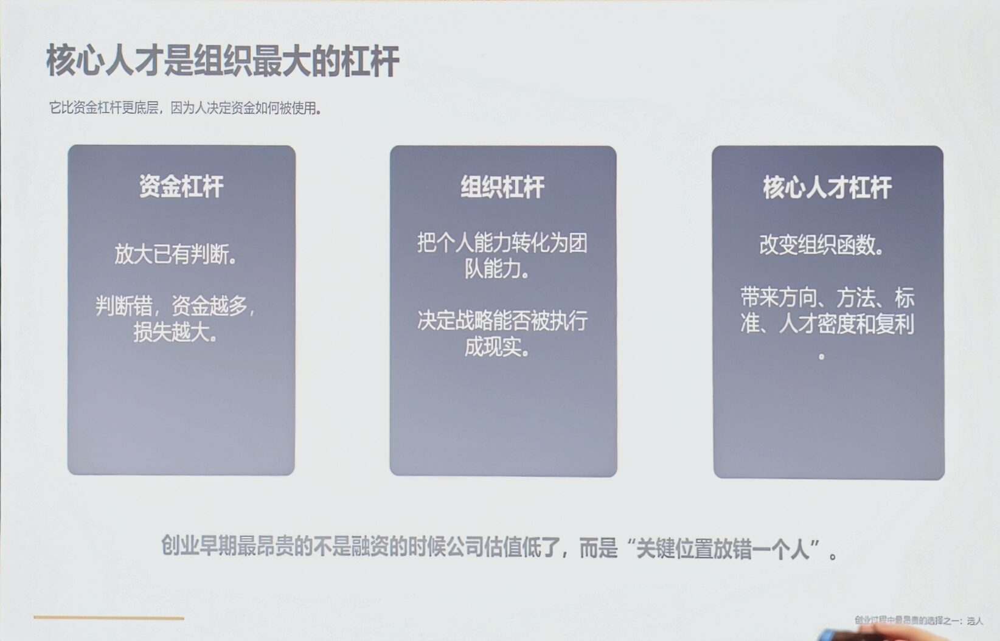
企业家决策：关键选人为什么微妙、难外包
上篇 · 选人
- 复杂岗位要求很多，极少候选人面面俱到：判断哪些要求是关键、哪些可以降低标准，这本身就是战略判断。大企业 CEO 选继任者最典型，要求能写一大页纸，但候选人很少，而且真正够格的人往往不愿意来做继任者，自己去创业了。哪些要求可以降低标准？这是战略性的判断。
- 关键时刻的选人很微妙：如果对建言者没有足够的信任，企业家都不敢听他的意见。在大企业里，关键人事决策首先是重大政治决策，不管政党还是教会，重要问题上的人事决策都是政治决策。没有足够信任，别人只敢给你提建议就完了；自己判断不够，也会造成很大损失。
- 越是创业公司，越难把选人外包：因为岗位本身仍在变化。HR、猎头、顾问提供信息，企业家承担判断。
想成为好企业家，选人能力必须自己学。
杨锦方 · 美团创始团队成员、前副总裁
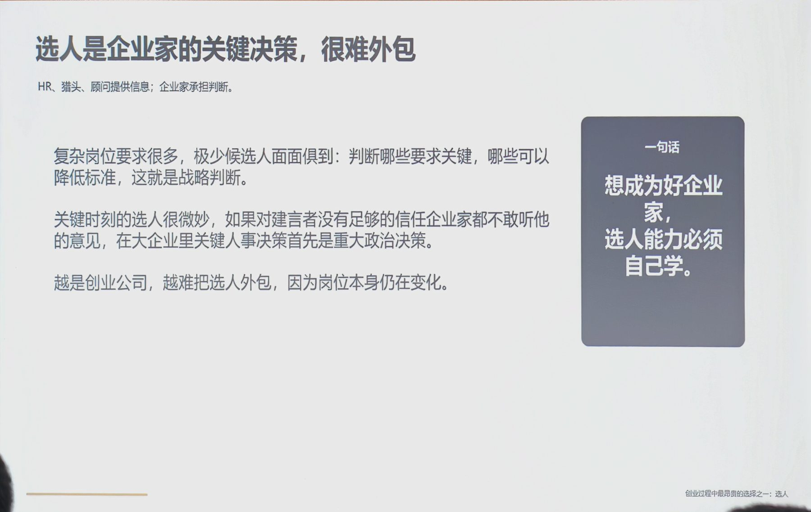
天赋与模型：模型不是答案，而是观察语言
上篇 · 选人
4.1选人能力某种意义上像数学
- 中小学程度：会问问题、会看履历、能识别明显风险。
- 大学程度：能理解岗位任务、能做维度化判断、能复盘校准（招进来之后看实际表现，对比当初面试判断，持续自我改进）。
- 北大数学学院程度：能跨行业识别潜力、能点石成金（有些人在原来地方表现平庸，换个地方就冒尖）、能重用无经验人才、能多次重复这类成功（这就不是运气，是结构化的优势）。
结论：不是每个人都能成为选人高手，但创业者至少要把这门课学到「大学程度」。天赋真实存在，不承认天赋没法解释为什么大部分人去北大数学学院一个学期都坚持不下来；但承认天赋差异，不等于放弃学习。
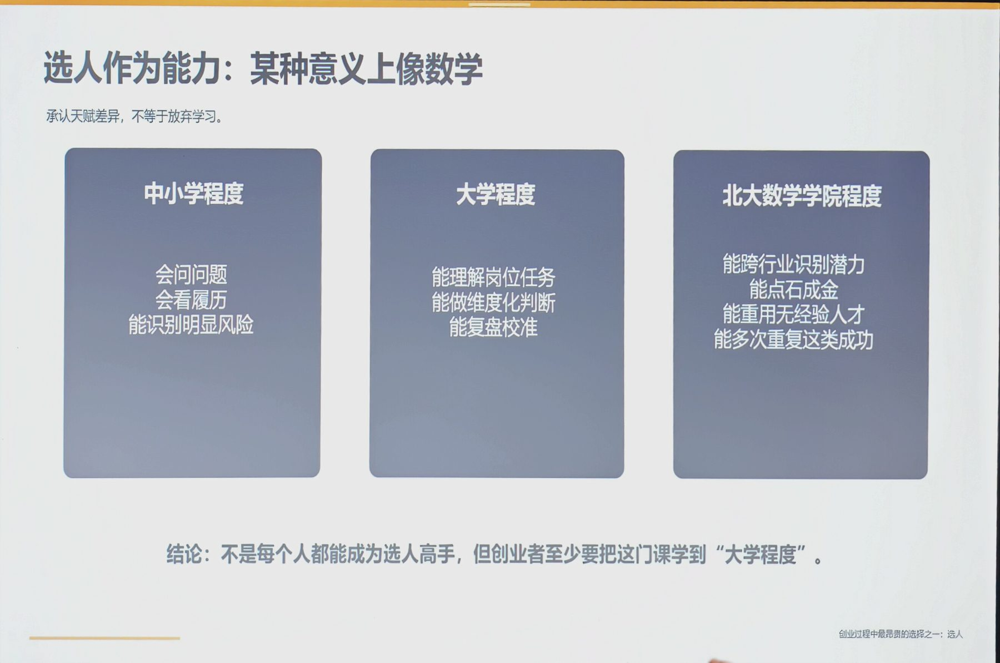
4.2人才模型是怎么来的
人才模型不是天上掉下来的。人类进入知识经济时代以后，企业寿命变长、竞争变激烈，重要人才的选择对企业长期股东回报至关重要，于是企业界产生了大量需求：选接班人、选重要岗位人才，后来又花样翻新推出「后备干部」「高潜力人才」计划。做心理学测量的学者逐渐进入这个领域服务企业的需求，心理学由此发展出一个重要分支，逐渐积累了这些成果。这些成果其实存在很长时间了：盖洛普的 StrengthsFinder 是 1960-70 年代就开始做的产品，Korn Ferry（光辉国际）也是心理学教授创业做出来的公司，都有几十年历史。
4.3三套值得对照学习的模型
- StrengthsFinder（盖洛普优势识别器）：34 个才干主题维度，大众化、传播广，适合训练对人的差异的观察，远比 MBTI 精细。
- Korn Ferry Learning Agility（学习敏锐度）：高潜人才模型，强调人在新情境中的学习、迁移与自我认知。五个维度：自我认知、思维、人际、变革、结果，其中自我认知是最重要的一个维度。
- 特定职位模型：职业化 CEO、销售 VP、产品负责人等职位，需要不同的胜任力画像。头部猎头公司都有特定职位的模型，但他们对具体行业的认识可能不如企业自己，会跟客户深度交流校准。
模型不能替代判断；但没有模型，很多人连「该观察什么」都不知道。他建议把不同模型拿来对照学习，发现模型之间的相同与不同，并反思为什么：如果不同模型都在讲同一样东西，那一定是有原因的。
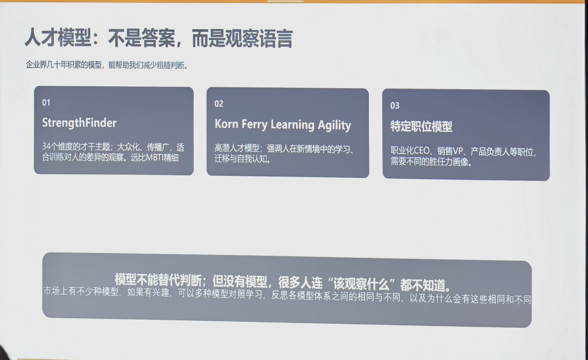
4.4为什么优势理论是 AI 时代少有的「正确的长期主义」
杨锦方的推理链条：
- 他身边绝大部分北大清华同学到了一定年龄后，技能老化严重，原来学的东西在新形势面前价值缩水；AI 时代这个危机显著扩大，今天的不确定性前所未有，他无法预测今天还有积累价值的东西，十年二十年后是否还有价值。
- 在不确定性面前，他反思可能的确定性在哪里。假设两个前提：一，没有大规模的人种改造（比如对人的多巴胺系统的改造）；二，未来我们仍然需要和很多人协作，而不是仅仅和 AI 协作、或者被 AI 支配。
- 那么两个推论成立：一，人的特质分类仍然是稳定的、相对确定的；二，学习优势理论以及基于优势理论的选人能力和自我认知能力，是一种长期主义，可积累、可迁移。
- 优势理论等心理学模型为了有更广阔的行业和领域适应性，概念是高度抽象的。这种抽象提高了学习门槛和难度，但同时也是可迁移性的来源，所以不要抱怨其抽象。
- 他自己的人生体会：在自己有独特性和优势（这就是自我认知）的方面长期学习（刻意练习）、不断提升，会形成时间复利。十年后哪怕比自己聪明得多的人，在缺乏长时间积累的情况下也无法超越自己。「北大的同学聪明多了，但只要他没有那么长时间的积累，在这个地方就没办法跟你 PK，就跟学数学一样。」
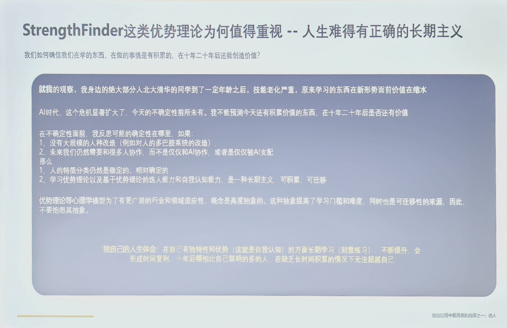
从战略到岗位：胜任力模型怎么来
上篇 · 选人
选人框架从战略开始，没有战略理解，就没有真正的岗位理解。链条是：
- 战略里有一些是变化的（随市场形势、竞争形势调整），有一些是相对稳定的：这个行业里你的竞争对手大概是一个什么样的人、你服务的客户是什么样，客户需求在一个时间段内比较稳定，这些是战略的前置条件。
- 组织结构匹配战略：比如大模型公司就是典型的知识密度极高的组织，做研发的人密度和战术地位都非常高，这其实就是它的战略决定的；而销售型、服务型企业，组织里占大头的部门就完全不同。
- 胜任力模型（岗位画像，俗称「美人图」）不是抽象品质清单，而是对战略、岗位职责和协同关系的结构化理解。岗位职责是一组任务；任务不同，需要的才干组合不同。跨行业识别潜力、点石成金、重用无经验人才且成功，本质上都是对战略、岗位职责、人岗匹配的结构化洞察，对任务、特质及匹配关系可迁移性的洞察。
5.1案例：曹曦为什么敢一把投月之暗面 3000 万美元
杨锦方用亲身经历的例子说明「战略决定关键角色」：他是曹曦（红杉中国合伙人，北大校友）的 LP。曹曦的基金当时规模其实不大，但投月之暗面时一下就决定投 3000 万美元。杨锦方跟他前两年经常一块踢球，就问他为什么敢这么投。曹曦的回答逻辑极其简单：投大模型公司，最重要的是对大模型这个事情的认识；这个市场上对这件事认识最好的人就是杨植麟。「但这就是战略判断，不是看上去这么简单：你怎么去判断这个赛道、它最关键的战略核心要素在哪里、关键角色是什么人。」这笔投资后面其实非常惊险，中间有一段时间月之暗面自己知道内伤，曹曦心里压力也很大，但事实证明他的眼光是对的，熬过最艰难的时间之后，月之暗面成了市场上非常有竞争力、非常有后劲的公司。
结论：战略决定组织结构，组织结构决定核心岗位。每个关键岗位定义的时候，都有一个任务组合（这个岗位要做哪些事情），把这些事情做好需要一套胜任力，胜任力模型就是对「任务组合」和「人的特质」之间对应关系的刻画，可以翻译成特质、也可以翻译成才干。
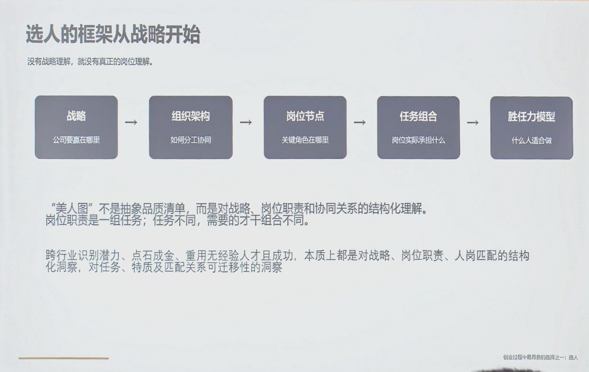
5.2任务类型与才干匹配：护工为什么需要「审慎」
找一个照顾高龄老人的护工，最容易想到的是耐心、责任心，这些是基础、我们都比较容易想到，但不够。真正关键的是「审慎」这种抽象特质：如果你照顾过年龄很大、身体状态很不好的老人，你会知道这些人的生活里充满了风险：走路不小心摔一跤，很可能就是骨折（对老人来说，这一跤往往就是人生最后一跤）；洗澡、上卫生间都有问题；吃饭喝水，他亲眼见过老人喝水呛到，呛一下就可能是大事。人类里有一类人，他对风险极度敏感，这个特质的名字就叫「审慎」。
有这个特质的人能干很多事情：比如在银行里面做风控、做产品合规，都需要对风险非常敏感。你可能想不到，照顾老人同样需要这种很强的风险敏感性，它意味着这个人对可能发生的问题有很强的预见性：他知道有可能会出什么事，提前把这些风险都处理好。只有这样的人，才做得好养老院的工作。这就是抽象的价值：概念抽象提高了学习门槛，但抽象正是可迁移性的来源。同样的，跨行业识别潜力、点石成金、重用无经验的人才成功，本质上都是「战略、岗位职责、人才平常匹配」的结构性洞察，对任务特质和关系可迁移性的洞察。
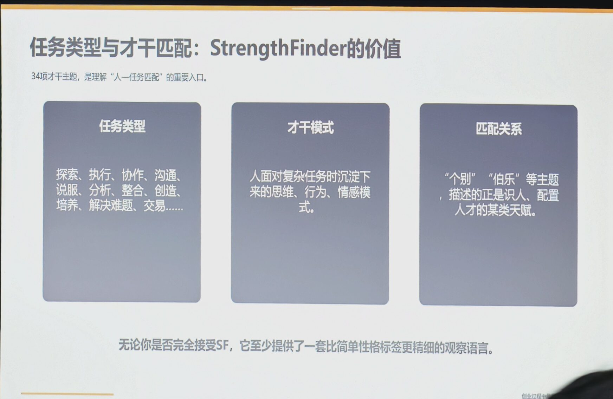
5.3关于天赋：既承认差异，也保留成长空间
天赋是基因非常重要的载体（跟表达相关）；但天赋并非绝对固定，基因有开关、有表观表达，「士别三日当刮目相看」。学习仍然必要：对创业者来说，最危险的不是「我没有天赋」，而是「我从未把选人当成一门必须长期学习的能力」。
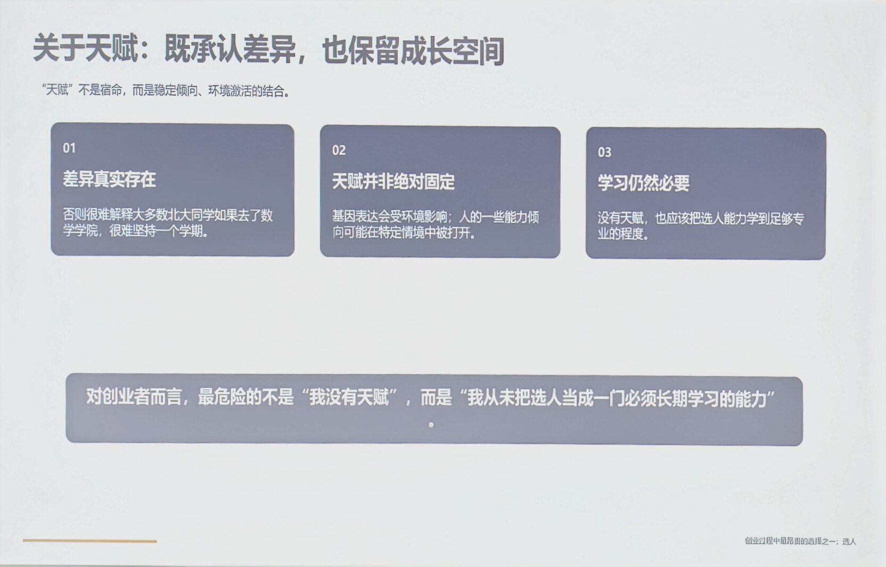
段位与训练：初级、中级、高级如何进阶
上篇 · 选人
6.1三个阶段
- 初级：看见差异。注意技能、态度、投入程度，但判断经常不准。
- 中级：维度化观察。能从责任心、学习能力、开放性、协作、推动力等维度观察人；简单判断较准，复杂判断仍不稳。看明星表演看得再多，如果你没有火眼金睛，也可能被骗。
- 高级：情境化判断。能结合任务、行业、组织环境和时间线判断人；知道哪些能力可迁移、哪些不可迁移。比如：把一个人放在什么位置、什么情境下能发挥最好；也能看出「这个时候不该用这个人」。
这个问题难就难在：学校不教，身边谁做得好你也不知道，平常不跟人聊的话，你连「谁是高手」都发现不了，这是非常遗憾的事情。但如果有机会跟人交流、相互校准，进步会快得多，校准是一定要有依据的，不是「别人好像看起来比我自己看得准一点」就算了。
6.2训练方法：四个 F 与三条路径
- 四个 F：Focus、Forecast、Feedback、Fix it（长期注意力分配 → 预测 → 反馈 → 修正）。反馈是强化学习的关键材料；没有外部反馈就自我反馈：跨时段观察一个人，当初的判断写下来，过段时间回头看对不对。
- 通过阅读判断人：读一个人的文章、访谈、传记，判断其特质，理解特质与成就之间的关联，并在持续阅读中通过「预测 - 反馈」校准。材料优先级：他自己写的文章优于别人写他的文章；自传优于他人写的传记；访谈是比较直接的素材。因为语言是思维的载体，他说出来的东西是他想的，别人写出来的不见得准确。例子：读洛克菲勒传记，他早年就表现出非常果断勇敢（背后是他对风险和回报的判断远超常人，不是瞎赌），以及对未来的乐观（标准石油在杠杆很高、压力很大的时候仍押注研发，最终对其他公司形成技术上的压倒性优势；后面做油桶标准、管道网络都是同一特质的外化）。如果你早期看到这些特点，就能预测他后面可能做什么、带来什么结果，把事串起来找背后的原因，会得到更深刻的认识。
- 面试是重要的学习途径：面试时写完整的维度化评价，在持续跟踪中观察、预测、反思、获取反馈、校准。关键动作：记录、对照、反馈、修正；拉长时间线，让时间校准你的标尺。
- 把观察他人的方法用于观察自己并反思，就是自我认知。
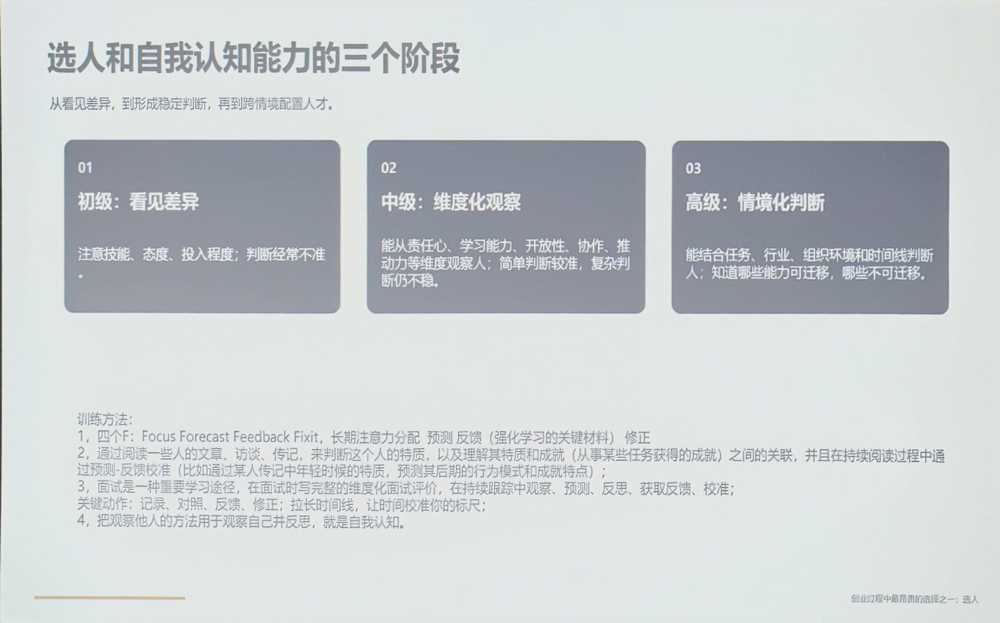
6.3观察企业家：什么信号说明选人段位更高
- 跨行业成功：换个行业照样成，说明理解了行业背后的共性、规律的可迁移性。
- 重用未被证明者：敢用没有重大成功经验的人并成功，说明能穿透资历看到素质和潜力。
- 点石成金：同一个人在原环境不出彩，换到他的企业环境里放光芒。
- 多次重复：最重要。多次重复上述成功，说明不是运气，而是有方法论。
6.4案例：汉武帝为什么是中国历史上「识人段位」最高的皇帝
杨锦方举了一个让全场意外的例子：汉武帝刘彻。他开玩笑说这是「中国历史上理工最强的学生、电子信息专业」的选人高手，理由是汉武帝整个生涯里最重要的两员战将，卫青和霍去病，来路都不「正规」：卫青是骑奴出身、是姐姐（卫子夫）家里的关系户；霍去病是私生子、年纪轻轻，两个人都不是职业武将出身。汉武帝同时代最有名的是「飞将军」李广，但汉武帝的大仗恰恰没压在李广这类宿将身上，而是重用了这两个没有任何资历可以查的人。
霍去病打仗的方式也完全是新打法：长途奔袭几千公里，不带后勤、以战养战，直接杀到匈奴王庭。这种「跨行业识别潜力、重用无经验人才且成功、还多次重复」的组合，正是刚才讲的高段位信号。当时可没有心理学模型、没有任何结构化工具可以交付判断，汉武帝只能靠自己的识人能力；今天我们有心理学模型，做同样的事方便很多。还有一点：你对事的认识会影响你对人的认识。汉武帝敢把大军交给年轻人，是因为他自己对「怎么打这场仗」有判断；后方他也用得好，不然历史上被篡位的例子太多了。
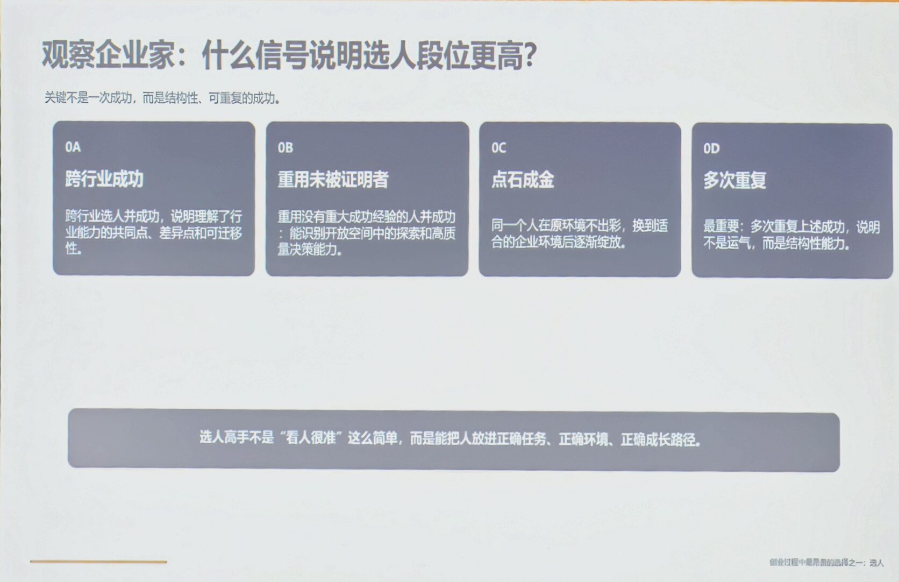
案例：我如何选择一二级市场投资人
上篇 · 选人
杨锦方讲最近的案例（不讲美团老案例，怕过时）：2019-2021 年做投资时，恰逢二级市场从高峰转入低谷，他集中拜访了大约 100 多位投资人，最后重点选择了两位一级市场、三位二级市场投资人。
- 他不喜欢选功成名就的投资人：一来他们时间非常宝贵，难以深入交流；二来「像我这样的投资人对他们来说多一个不多、少一个不少」，你不了解他，就没法做判断。但话虽这么说，他还是因为崇拜一位传奇投资人犯过一次错：放弃了独立判断，造成重要损失。「所以还是要独立判断，知行合一很难。」
- 今天回头看，这几位投资人里，两位一级市场投资人，后来一个美国顶尖家族办公室的人跟他说「这两个人是年轻一代里可能唯二成功的」，他起初有点吃惊，后来想想应该是对方见的人还不够多，大家族钱多、只需要盯管理规模大的那一批，反而漏掉了视野之外的人；二级市场投资人里，一位是 89 年的年轻明星基金经理，一位是被投资人朋友称为「交易天才」的 92 年选手。他自谦「这不说明我有多高明，但说明选人可以形成一套可复盘的判断系统」，重点是不是追逐名气，而是判断一个人的判断系统；这件事他自己也不是天生就会，也不是很聪明，但通过长期积累，可以达到远超没学过的人的水平。
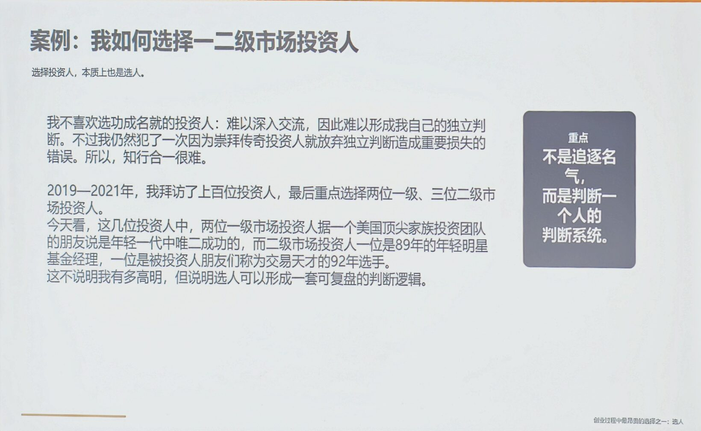
7.1四条选择逻辑
- 过往业绩是否出类拔萃：先从结果筛选，但不能迷信结果（投资做得好可能是运气）。
- 是否有独立判断：是否有自己的体系，且逻辑自洽。他会拖得非常细地聊：你这个判断是怎么一步一步形成的？有的投资人不愿意聊这种话题，有的逻辑是编的；只要能持续深挖，就能分辨体系里是不是真有货。
- 性格和价值观是否与投资策略和谐：投资是极其考验人性的事情。性格跟策略不匹配，极端情况下一定会亏大钱。
- 是否纯粹：是否享受过程而不只享受结果。某种意义上投资是体力活：天天出差、不断见人、大量谈话，不热爱过程的人做不下来。
7.2高段位的三个迹象
- 同时持有矛盾特点的两个极端，且能在更高层级自洽，并有能力判断在什么情境下使用哪一端。例子：他选的一位投资人有句在朋友间广为流传的话，「有信仰、无执念」。没有信仰不敢重仓、不敢长期持有；有执念在情况发生变化时不敢抛。两者兼备很难，他做得好不好跟这个特点直接相关。
- 自觉（自建体系）：投资圈绝大部分人是有师傅的，跟过厉害的人，身教言教学到很多；自己看书琢磨、自己构建投资体系的人，如果业绩差不多，至少高一个等级。
- 能把一笔「观念投资」讲清楚：从最早想法形成，到平衡策略，到构建可操作的投资方法，到执行过程，到最后退出获利，完整、清晰、严密地讲出来，绝大部分人做不到。
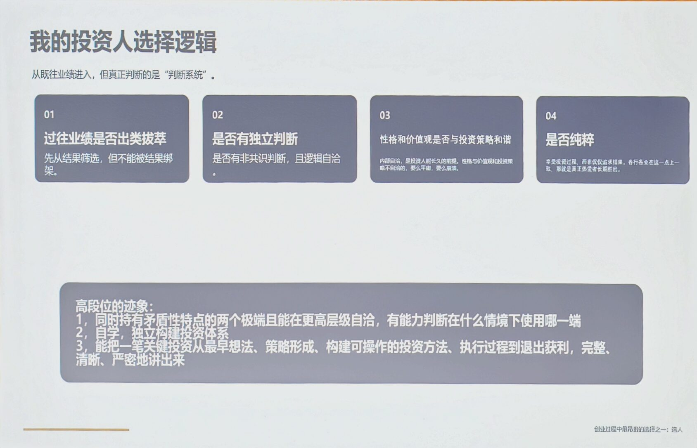
7.3选人能力的镜像，是自我认知能力
当识人能力反过来观察自己，就变成自我认知。两个工具：
- Korn Ferry Learning Agility：高潜人才的最重要维度之一，是自我认知能力。知道自己如何学习、如何迁移、哪里可能卡住。
- 彼得·德鲁克《Managing Oneself》（《自我管理》）：管理自己，是管理他人和选择他人的基础。这是《哈佛商业评论》阅读量最大的一篇文章，值得反复重读。
选错关键人，是创业最昂贵的选择之一；持续选对关键人，是创业最有杠杆的能力之一。
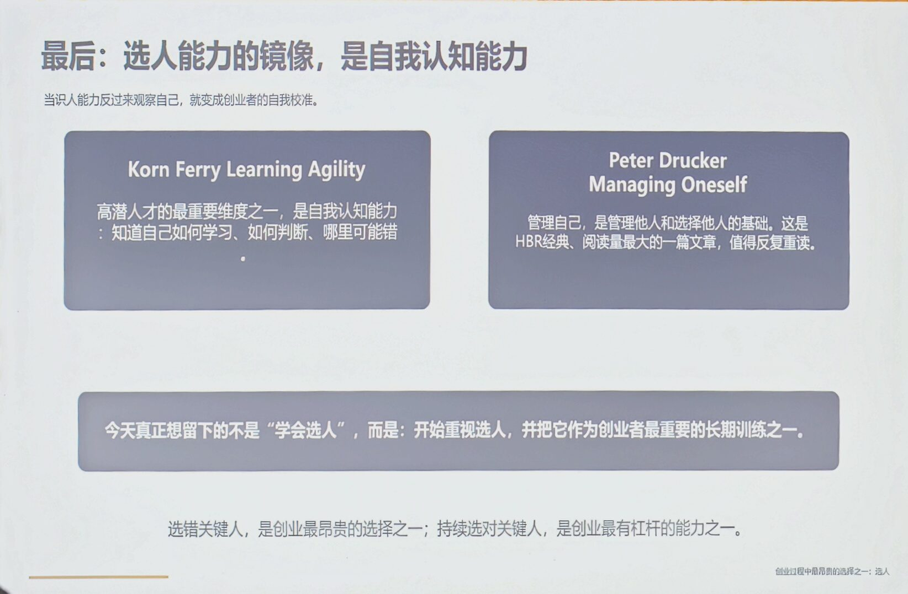
7.4中场追问：先有战略还是先有人？王兴的模糊容忍度
上篇讲完、休息前有同学追问：你前面一直讲「先有战略、从战略到选人」，但什么情况下是「人在前、战略在后」？杨锦方回答，这个问题之所以成立，有两个原因：一是现在新变化很快，该做什么其实是要边探索边调整的，战略本身不稳定；二是创业早期你根本没得选，能有一个有信念、彼此认可的伙伴就已经很了不起了。
- 创业的魅力正在于不确定性：如果这个机会非常确定，大公司的人和钱早就进去把它做完了，轮不到创业公司。正因为不确定，才有创业机会。所以企业家最重要的特点之一就是模糊容忍度，普通人往往不具备。
- 王兴的模糊容忍度：杨锦方说自己跟王兴共事了相当一段时间之后，才发现自己之前的思维方式有问题。王兴是模糊容忍度很高的人：他们经常受不了王兴开会，一开就好几个小时，最后什么结论也没有，散会。「你看我们都是带着任务来的人是吧？」后来他慢慢理解了，很多事情当下就是没有结论的，王兴能容忍这种没有结论的状态，而他们不能。这就是在不确定性里找机会的能力。
- 早期伙伴：通常不是「选」出来的。很多伟大的企业家，他最密切的伙伴就是他的同学、舍友。创业初期可能你没有选择的余地，有一个就已经很了不起；如果碰巧你们还有非常深的共同愿景，那是运气非常好。信任他、他大概率又是个好人，这就是够用的起点。但这不是让你放弃学习：选人能力提高了之后，等你有了选择权，你才知道要做什么样的选择。
企业能力 = 战略能力 × 组织能力
下篇 · 组织
杨锦方坦承：第二部分内容，很多学生反馈「听的时候觉得好，后来记不住」。他自己当年也一样：2011 年王兴带着他去请教阿里前 COO 关明生，两天时间花 20 万，关明生说「你们核心的问题是领导力和价值观缺失」。他当时没听懂，回来之后还跟同事吐槽「这说的什么」，是花了两个月时间才明白他在说什么。「所以我讲的大家也很可能听不懂，但如果想要创业，过几年这个问题还是得讲一讲，不懂的损失很大。」他当时压力最大，带着美团几千人的营销团队，自己啃了两个月才消化，可见这事门槛不低。
战略能力判断做什么、不做什么；组织能力让战略被执行成现实。两者是乘法关系，任何一项为零，结果为零。
组织能力的核心，就是领导力和价值观。共同愿景是稀缺资源：人一辈子能碰上一个让自己有愿景的组织非常难得，宗教信仰是极端例子，信徒一辈子可能生活艰苦，但内心富足，精神世界非常快乐，这就是共同愿景、共同价值观的好处。领导力就是要把愿景、使命、价值观转化为组织共识：不是创始人一个人有想法就行，必须通过组织机制把它变成共同信念。
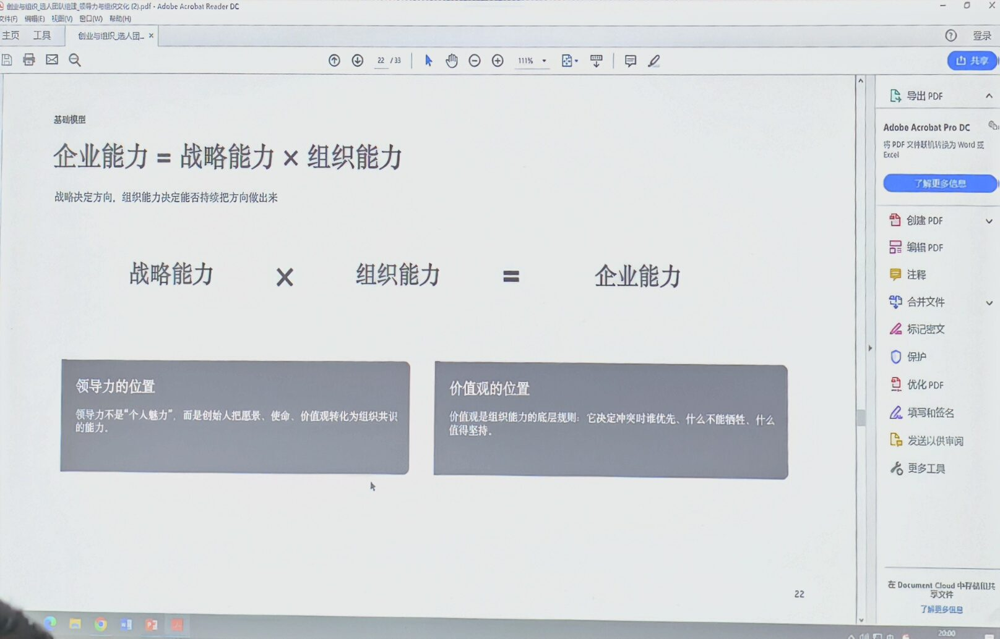
什么是组织的价值观
下篇 · 组织
价值观不是「好听的话」，而是组织面对冲突时的排序原则。三层含义：
- 价值取向：品质为先、成本为先、客户第一、长期主义，都是价值取向。客户第一还分 C 端客户和 B 端客户之间的关系如何处理，以及长期和短期之间的取舍。
- 利益排序：消费者、商家、员工、公司、股东、创始人之间，冲突时如何排序。
- 行为原则：价值观无法完全细则化，但能指导大量无法写进制度的小判断。
价值观回答的不是「怎样显得正确」，而是「压力下怎样做才真正对组织好」。
注意两个关键词：一是压力，没有压力的时候体现不出价值观；二是对组织好，不是对个人好。
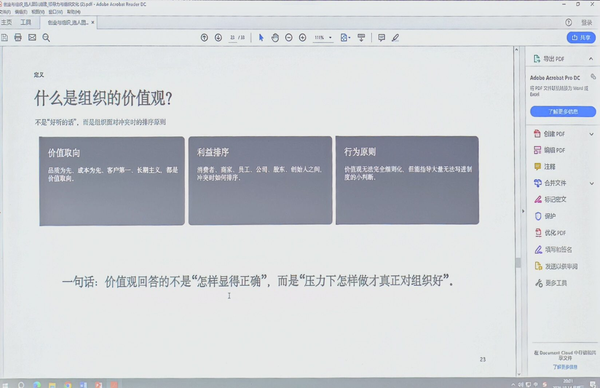
9.1什么不是价值观
- 不是法律：法律是底线，价值观是组织在合法范围内选择何种行为方式。
- 不是管理细则：细则越具体，覆盖范围越窄；价值观处理的是无法穷尽的复杂情境。比如「客户第一」没法写成政策，日常工作中大量跟客户打交道的情境，制度覆盖不到。
- 不是宣传口号：如果没有进入选人、评价、晋升和奖惩系统，就不是组织真实规则。
检验价值观的标准：它是否改变真实决策？如果不改变资源分配、不改变人的命运，它就只是墙上的文字。
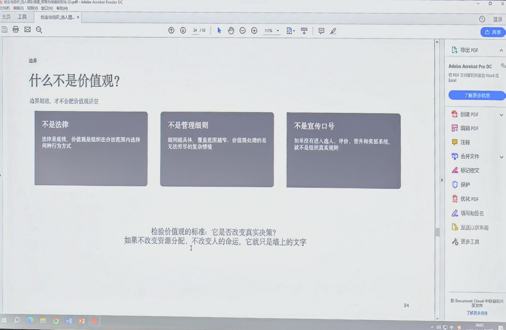
9.2价值观如何藏在日常动作里：新荣记后厨的鸡软骨
新荣记老板张勇（荣叔）在东京开了一家高端中餐店，人均大概 5000-7000 元人民币。但刚开店时招不到做高端中餐的厨师：不是日本没有好厨师，而是当时不能从中国调人过去，只能先凑合用。后厨有一道菜要炸鸡软骨（掌中宝），炸得正好、火候最佳的时候，有个厨师直接拿起来就吃了。
这件事小吗？这不是成本问题：一块鸡软骨值不了几个钱，张勇买食材从来都是买最好的、根本不在乎成本。问题在于，「在出餐口直接把给客人的东西拿来吃」这个动作，跟一家高端餐厅对出品的敬畏完全不匹配。价值观不是抽象德性，而是具体业务场景中的稳定取舍。同样一个人、同一个动作，放在大排档可能没人觉得有问题，放在人均五千的新荣记就越界了：所以不能脱离组织谈绝对的「好人好事」，价值观只有落到具体场景里才有判断标准。
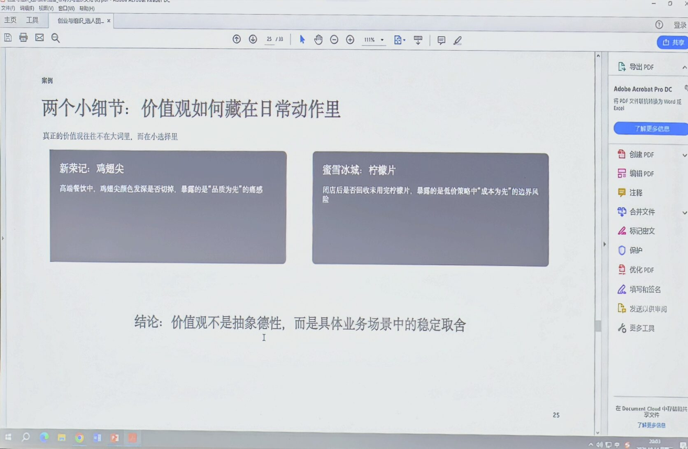
美团早期：部门冲突背后的价值排序混乱
下篇 · 组织
价值观缺失的代价，美团亲历过。当时销售团队和市场压力很大：销售要拿单子，觉得品控部门「刚从大学毕业的小女生，没经历过市场搏杀的惨烈，完全不体谅我的难处」；客服和商家那边又觉得大销售「老奸巨猾，为了自己的利益无所不用其极」。典型冲突场景：商家接待能力有限（比如门店只能接待一定量），销量太大商家接待不过来，门店就会崩溃、客户投诉；客服希望给商家设置预约和销量上限，销售觉得你在限制我的业绩。实际上大家都把对方想得太坏了，核心问题是公司层面没有形成统一的价值排序，所以各个部门都觉得自己有道理。
这些冲突在当时反复发生，公司在很长一段时间里不同部门打架，就是因为没有一个公司层面的统一答案。所以价值观培训真正要解决的，是把这些部门间的冲突，转化为全公司共同的动作语言。
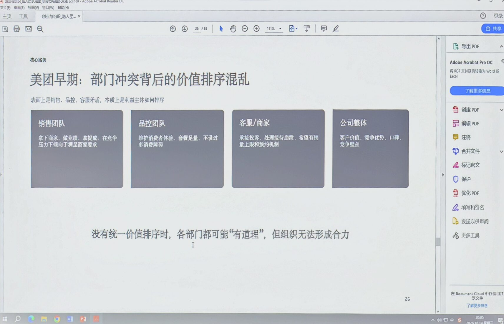
10.1解决：把冲突转化为共同动作
美团后来整理出统一的利益排序：
- 排序之后，前面那些部门冲突都迎刃而解：消费者利益第一，所以不能让商家卖超过接待能力的量；员工的业绩、奖金、晋升优于股东回报，所以要先照顾好员工。
- 排序不是永远正确的答案，而是当时组织用来统一思想、统一行动的共同语言。价值观培训的真正目的，不是让每个人背诵，而是让大家在冲突中做出同一类选择，形成合力。
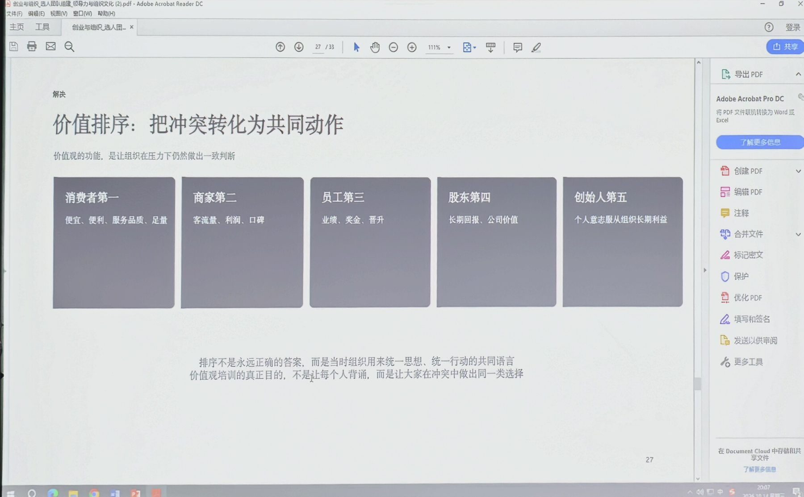
领导力不是个人魅力，而是组织意义系统
下篇 · 组织
- 愿景：我们要去哪里？能为大家创造什么样的未来？尤其是 AI 时代，未来变化非常大，你相信什么样的前景、相信什么样的未来，会筛出一波不一样的人。
- 使命：我们为什么存在？什么是值得长期投入的事？这个公司存在的意义是什么？
- 价值观：遇到冲突时，我们按什么原则做选择？
伟大的创始人通常很早就有领导力想法的雏形，但必须通过组织机制把它变成共同信念：不是一个人信，而是让充分多的人信，最好变成大家共同的组织语言。美团早期招聘时就发现：有的人找工作就是「销售也是销售」，有的人相信互联网、相信互联网会给生活带来重要改变、并且基于这个信念来做这件事，事后证明，有愿景的人走得更远，进步也更大，倒不一定是能力更强。
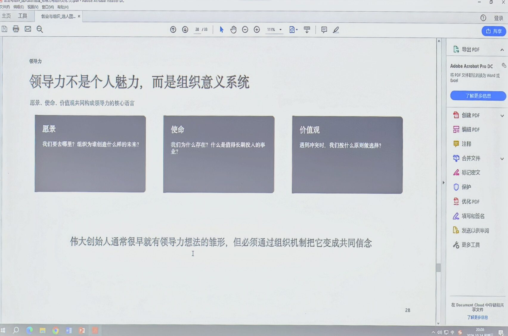
价值观落地：从入口开始，到五句话总结
下篇 · 组织
12.1价值观从入口开始
- 志同道合：价值观从入股、选人、招聘开始选择志同道合的人。选错人的代价很高：价值观不合的人，组织里会放大很多矛盾。
- 面试问什么：问候选人在真实冲突当中的取舍。在压力环境下、有冲突的情况下，他怎么选、把谁的利益放在前头，最能呈现一个人的价值观。
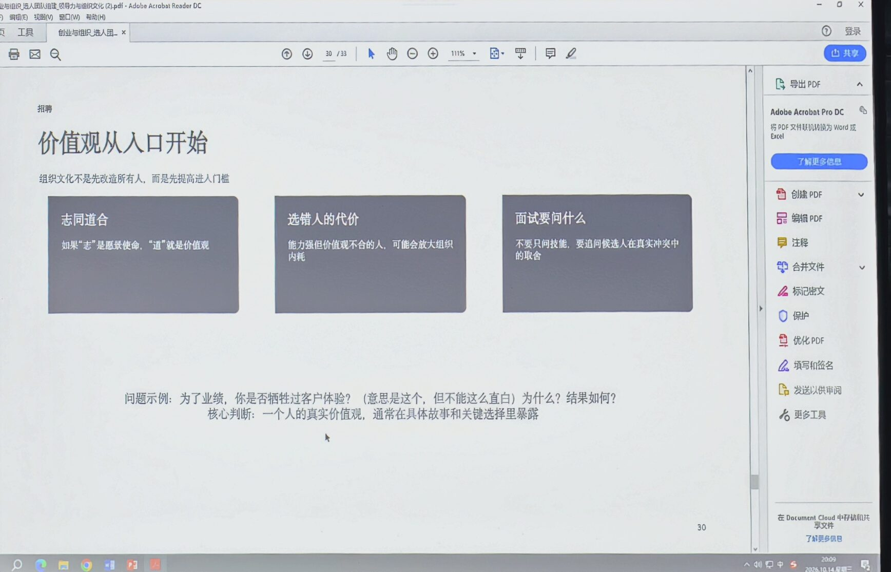
12.2业绩 × 价值观矩阵
| 价值观好 | 价值观差 | |
|---|---|---|
| 业绩好 | 明星：重用、给空间、给回报 | 野狗：坚决不能留。如果组织长期容忍野狗，价值观就会被证明是假的 |
| 业绩差 | 小白兔：给辅导、给机会，但不能长期容忍 | 淘汰 |
最难的是野狗。抗日战争、解放战争期间，我党把不少「野狗」改造成了「明星」，靠的是扎实的领导力价值观建设。推荐学习材料：电视剧《历史的天空》，姜大牙（姜必达）以及跟他背景相似的这些草莽出身的军人，在整个过程中怎么样被组织一步一步改造成符合价值观、有愿景的优秀成员：从大字不识的土匪式人物，到逐渐理解纪律、理解组织、理解为什么而战。过程很艰苦，但看完你就明白，做领导力和价值观的工作不容易，回报也很高。杨锦方还点了《亮剑》的李云龙：他在很多时候的表现其实是野狗风格，抢兄弟部队的装备、战场抗命，放在今天的公司管理语境里都是大问题；但后来的文艺作品很少像《历史的天空》这样，正面去拍「改造」的过程，而改造恰恰是一个组织价值观建设里最见功夫的部分。
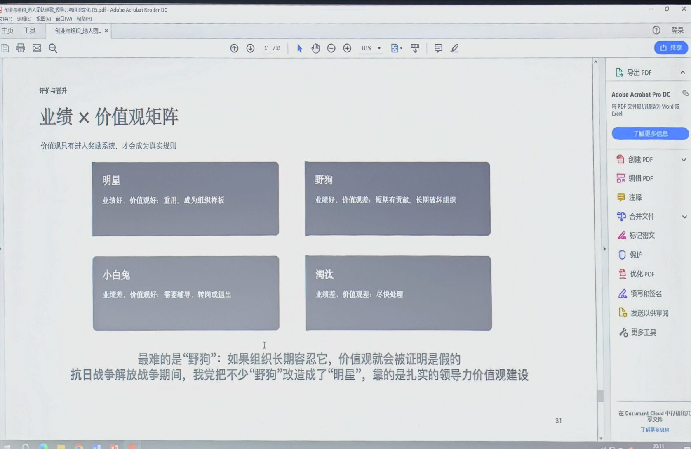
12.3价值观的误用：最容易毁掉共同信念的三种错误
- 用价值观打击不同意见、不同派别：把价值观当成斗争工具，公司就走向反面了。
- 评价不基于事实，而基于标签印象：价值观评价不像业绩可以量化跑系统，它要基于观察、基于对事实细节的分析，管理者必须花时间研究。高层自己不躬身，却要求基层相信，不可能。
- 自己不以身作则，却要求基层相信：价值观的可信度，来自事实、透明、公正和高层以身作则。
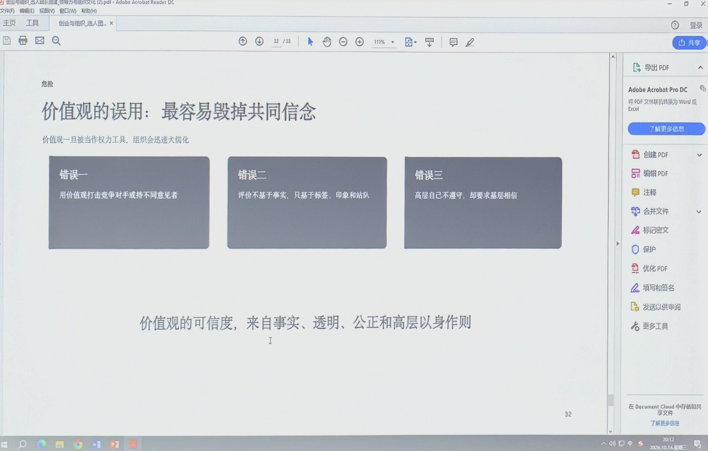
12.4五句话总结第二节课
- 企业文化不是氛围，而是重复选择后沉淀的模式。
- 领导力不是个人魅力，而是愿景、使命、价值观构成的意义系统。
- 价值观不是口号，而是组织面对冲突时的排序原则。
- 价值观必须进入招聘、评价、晋升和日常运营，才会成为真实规则。
- 不要只看一个组织说什么，要看它在利益冲突中反复选择什么。
看冲突中的选择，看资源分配，看谁被奖励、谁被容忍、谁被淘汰。
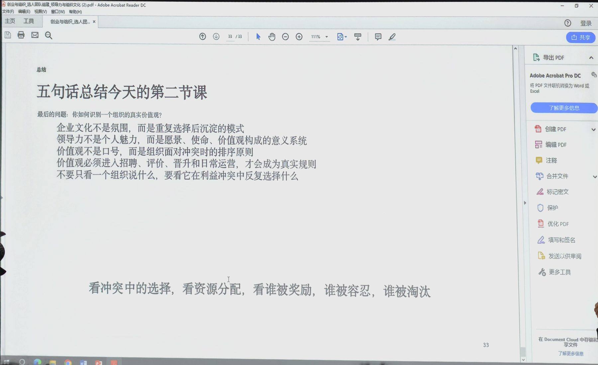
刘勇串场：1.01 的 365 次方
串场
刘勇补充两段个人经历：
一，拉姆·查兰的两个 CEO 标准。他和杨锦方除了同学、战友，还是球队队友，也是「同事」：从 2013 年开始，他在管理层遇到很多问题，杨锦方在美团做高管，他就老跑去请教。印象特别深刻的是，当时选人这套体系，杨锦方就跟他讲过（可惜他当时没认真去看）；还有一次是杨锦方给他推荐拉姆·查兰的书，特意说这里面有两个最重要的东西：一，做 CEO 必须在复杂的世界里快速发现问题、并找到问题的本质；二，必须有在复杂环境里识人用人的能力。这两句话他一直记着，也一直在磨练自己。他还推荐同学们去看原文，因为转述的准确性很重要。杨锦方纠正：原文更准确的说法是，拉姆·查兰作为顾问跟很多非常知名的 CEO 共事过、观察了很多人，发现最出色的 CEO 有两个共性：一是能在复杂局面里快速把握关键问题，不光抓住它，还要能找到解决方案；二是善于观察身边的人，因为看很远的人不太容易，身边的人有大量时间可以观察，能发现他的特点优势、知道这些特点在什么情境下能够得到表达，这就是情境化的判断。刘勇补充：那时候他差不多管 1000 人，杨锦方在美团管 2000 人，「他在组织人才选人上的认知一直比我深刻，而且这个能力是可移植的，他今天又用在了投资上。」
二，意愿大于能力与时间复利。他在辅导创始人时说，志同道合不能简单粗糙理解，你要找的是「愿意跟你一起干」的有能力的人，意愿绝对大于能力。一个能力没那么强但更敢拼的团队，比能力特别强但意愿弱的团队，哪怕每天只领先 1%，1.01 的 365 次方就是 37 倍；如果创业是 5 到 10 年，你比别人领先 37 的 5 次方、10 次方。所以要相信时间复利。「美团也是在锦方的参与下在千团大战上取得卓越成绩，也验证了赛道一定要选准：一流的赛道，放大我们所有人的能力。」
Panel：当美团老兵遇上 AI Native 新生代
对谈 · 杨锦方 × 王鹏霄
选人的变与不变：AI 时代相比你从千团大战杀出来、几万人的团队时代，选人的标准和方式哪些是变化了的，哪些是没有变化的？
我先说两句，因为我有痛感。我在美团做顾问时面试高管候选人，公司安排的大概上百号人，每人聊一两个小时。前面我觉得都还好，到面试大模型的人选时，我发现我不会了。这就是 AI 时代的变化：大模型对基础科学和技术的要求比互联网时代高很多，不是高一点，是高很多。我试图学习，发现难度很大，不是一时半会儿学得会的。我曾经相信自己应该是能读懂技术趋势的人，后来发现大模型门槛太高。所以你也能看到，今天重要的 AI 公司创始人都是博士毕业、学了很多年。技术门槛变高，意味着创始人自身的学习能力和判断力门槛也变高了，这是「变」的部分；「不变」的部分，是价值观、自我认知、学习敏锐度这些判断人的底层维度，反而因为变化快而更值钱。
我举一个小例子。22 年之前我创业的时候，遇到坎（产品、增长、研发），第一反应是招人：这个地方解决不了就招人，那个地方解决不了就招人。但现在我们遇到坎，第一反应是能不能让 AI 先解决掉。倒不是说不咨询人，决策还是需要人去做的；但当你企业到几十人、上百人规模扩张的时候，遇到的坎更多是执行力、执行层面的事情：之前一个广告素材要变成几百个广告素材，之前 1 个销售要变成 10 个销售。以前的方式是先把人堆着，现在的方式是先把 AI 堆着。所以按我们现在的规模体量，放在几年前的互联网时代应该是 200 人团队，但现在我们非常刻意地提高人才密度：宁愿给一个人发 5 万甚至 10 万的工资，也不愿意招 10 个 1 万块钱的人。用这种方式强行控制组织非常小，但做的事比以前多得多。
AI 时代团队该变小还是该变强？这两个一定选一个的话，为什么？
AI 是很强大的杠杆，今天大家应该都已经感觉到了，而且这种影响既深又远、会持续很长时间。小可能不是一个可选项，某种意义上是趋势；但小了之后强不强跟人有关系，跟你用得好不好有关系。
顺带分享一个感触：我看到一家美国创业公司做「物质生成器」，把生成式 AI 从生成字符、数据、信息，扩展到生成物质。通常大家说 AI 是信息生成，这家公司决定做物质生成。AI 时代大家要去找这种有更长久生命力的机会，虽然更难，但难不一定是坏事：难，可以把你逼出来的优势放到非常大；它同时是门槛，也是筛选器，因为它难，所以绝大部分人在筛选器面前会失败。互联网时代相比之前，企业集中度高了很多；很有可能 AI 时代的特点就是集中度再上一个台阶，筛选器变得越来越厉害。
企业文化怎样真正进入招聘、培养、用人和淘汰这几个环节，从而放大 AI 这个杠杆？
举两个具体例子。招聘上，我们是全员招聘，业务方和 HR 都背招聘指标。找候选人要「像鲨鱼闻到血一样」：有一个候选人在杭州，我们晚上直接一个飞机打过去，明天上午见面。吸引候选人，我总结下来对同学们特别有帮助的一点：把自己变成一个类似于「传销组织」的学习对象，因为创业早期没人认识你、没人认识你公司，最好的方式就是「忽悠」，方式多种多样千奇百怪，最好的学习方法就是去研究这类团队怎么做的。举个例子：我们曾经为了招聘一个候选人，从刚开始创业就跟他聊：「师兄我们融到第一轮资了，好时机」「师兄我们 2000 万美金估值了，再不来可能错过」「师兄我们 4000 万美金估值了，再不来没有你的股份了」，一直没打动；直到有一天说「师兄我们马上 1 亿美金估值了」（其实还没到），「你再不来要错过大机会」，师兄说好吧，我来跟你聊一聊。来了之后，一方面跟他讲我们能干多大的事情，一方面我们真的在推进下一轮融资，左脚踩右脚，最终两个事情都落地了。有时候就是靠这样无中生有，拿到你想要的估值和你想要的人。
选人上，我们觉得 AI 时代价值观比能力重要得多。稻盛和夫有个比喻：能力是一个数字，北大的同学可能能力是 1000 或 1 万，但价值观是前面的正负号。如果我们觉得一个人价值观有问题，哪怕能力上天下地也不招。我们团队曾经招过一个简历很好的高管，当天发现价值观有问题，第二天就立即谈离职。在当今时代，价值观不合是比之前更难容忍的事情。
选用育留是个庞大系统。基本的工作是：你要先有价值观评估能力，在你没有价值观评估能力之前，先不要用价值观去评价人、做加薪晋升的决策，因为一旦评错了，对人的伤害很重；但招人的时候可以用，招聘阶段就要找到有相同愿景、认同使命、认同价值观的人。把价值观真正融入人员核心流程，是需要组织具备能力之后的事情，我们当年讲了这个东西很长时间，真正融入流程是两三年以后。阿里巴巴会更早，因为关明生在阿里把这套配套体系落了地，所有阿里人进去的第一课就是价值观大培训。所以要根据自己的实际情况来：有能力做比较结构化的价值观评价时，再把它融入加薪和晋升。加薪晋升影响很长远，它是信号，信号搞错了问题很大。
互相拆台：你不赞成对方什么
对谈 · 临时加题
刘勇临时加了一个没有准备过的问题：刚才锦方讲的好像都是过去时代的东西，鹏霄你有哪些地方不赞成他？同样的问题也给锦方：鹏霄刚才侃侃而谈，你觉得他哪些地方有漏洞、甚至有致命的东西？
刚才师兄好像讲到选一二级市场投资人的事（指「投资做得好可能是运气」的表述）。我目前接触到的我的股东，我觉得他们能做得好，努力和品格好像比运气更重要。比如曹曦师兄（红杉中国）也是我们的股东，还有蓝驰、锦秋，都是顶级基金。曹曦师兄特别难得：我会每周给他发一封邮件汇报进度，他经常凌晨 2 点、2 点半还在回。他们对创业者有一种天然的相信：相信你就是支持你，即使在我自己觉得这事可能只有五成把握的时候，他们都相信。有一段时间融资很难，差点过不去，能得到大家这么大的支持，让我亲身感受到品格的力量。我觉得任何一个企业翻它的历史都会有至暗时刻，我们可能也会有，我一直在避免它到来，但估计也会有；那时候能让公司坚持下去、最终走向伟大的，应该也是品格，公司上下拧成一股绳，从创始人到每个人都非常相信这件事，超乎金钱之外。
我还是坚持我的判断，投资这事有周期的问题，跟运气很多因素搅在一起。至于 AI 时代和前 AI 时代的差别，我觉得现在还有很多不确定性，我也不认为我讲的东西都是对的。这些是上一个时代的经验，在新的时代面前我们要怎么面对经验？一方面要有开放的心态去学习，因为你没有别的经验可学，这个时代的经验还没长出来；另一方面要保持批判的态度，经验有可能变。
我自己在进入互联网行业前后也面临过同样的问题：以前的经验在互联网时代不适用。后来在不断的挑战和讨论中，形成了世界观层面的变化，最重要的就是认识到世界的高度不确定性，并且愿意接受它、愿意在不确定性下继续采取行动，不是躺在那等不确定性变成确定性再行动，那时候往往已经晚了。还有一点，跟「模糊容忍度」类似：你的观点要有很强的根据，你对它强信心是因为它是有根据的，不是拍脑袋；但同时对未来的不确定性保持开放，如果有一天情况发生很大变化，你要有深刻的思考、意识到这个变化有多深刻，它可能改变你之前认识的框架，这时候要拆掉框架重新形成新的看法。这可能是这个时代唯一的办法。
问答实录（七问）
Q&A · 按逐字稿保留，每个问答完整呈现
现在只能通过聊天、见面、短期互动去了解一个人，感觉和实际工作起来的表现不一样，信息太少怎么办？
给一个最快的筛选器。判断一个人的认知能力有多高，最简单直接的办法是问他：你有的最难的、最大的一个「非共识」判断是什么？非共识就是你跟别人都不一样、但你有真根据。大家都聪明，平常聊天分不出来，这就是个筛选器：如果有人能回答好这个问题，毫无疑问这个人很厉害，王兴就是这种人。问题可以稍微降级：他这个判断是完全自己从最早的想法逐渐形成的，还是经过谁的启发、有没有清晰严谨的进一步批判？很多人其实没有独立思考，是听谁说了觉得有道理。关于认知的各个方面问题都一样，挑难的问题来问，是找筛选器最高效的方式。
创业早期两三个人，找特立独行的「超级野狗」天才，可能合不来、组织密度下降；找普通人才又怕平庸，怎么选？另外问自我认知：选人还是被选择？
这个选择其实一样。我当年是自己去找王兴的，我说「你在干啥，我要跟你干」。他是我师弟，比我小 5 岁，但他是我最好的老师，这跟年龄没关系，他的认知能力确实远超我们这帮同学。所以回到那个问题：你能干啥？你的个人特点是什么？你有什么优势？你在什么样的环境下发挥最好？跟「把每个人放在什么位置、什么情境下能发挥最好」是同一个问题，也可以用来问自己。你不一定要成为一号位，你也可以选择在一个更好的团队里成为其中的某个角色。
问王鹏霄：产品从百万美金到千万美金，具体做对了哪些事情？
用户规模扩张上，我们做了一个别人都做不了的效果，直接在北美爆发（同类产品都没有的效果，只有我们有，呈现得非常好）。背后是我们跟用户直接打交道：我们公司价值观第一条叫客户为先，不是老板为先、不是股东为先。投资人让我干啥，我说不一定干啥；客户让干啥才干啥。我们直接给用户打电话回访，需求就是这么聊出来的，非常简单直接。
问王鹏霄：你怎么识别什么人适合做联合创始人或早期核心成员？
就是同班同学里聊出来的。宿舍 4 个人、同班好几个，你能感觉到有一个人和你「十年后的目标」最接近。我当时入学北大时就有个想法，10 年内做一家上市公司。跟同学聊，我会问「你 10 年后想干什么」，你看那位同学 10 年后想做的事和你是不是很相似，这个人是可以和你一起同行的。至于能力上是否互补，都是后来分化出来的：我当时也写代码，他也写代码，最后我写不过他，我就不做技术了，改做产品和增长，他是北大计算机本硕，代码写得可好了。
问王鹏霄：你们的长期竞争优势是什么？怎么跟美图秀秀等各种图像类应用竞争？所有投资人都会问这个问题。
我们觉得美图秀秀太难用了。刚结束的十一假期，每个人大概率都出去玩了，相册里多了五六百张照片，但修图一张 5 分钟、10 分钟，最后导致的结果是你不发了。每个人都有想变美、想去发的需求，你要把中间所有链路上的损耗全部打掉，最原始最舒服的方式就是：我这会儿正在海边，晚上看完之后朋友圈就发出去了。
问杨锦方：价值观这个东西，对创始人来说，需要一个什么样的认同和发展过程？
我举海底捞的例子。海底捞最早创业时也没有做多高端，但创始人张勇自己手艺很好、非常热爱做饭，哪怕今天他最想做的事情仍然是做饭，很纯粹。所以他的价值观「我要用最好的食材做最好的食物」，你说它是价值观也好、是愿景也好，是融为一体的，最后融入他的血液。因为他的特点，所有被他吸引到的人最后都被他改变了。创业的时候如果还没有高端餐饮，大家都是做普通餐厅的水平，是创始人内心的热望带着组织往上走。核心是创始人内心的热望：他想要做什么样的事情，这个事情做起来他有热情。市场定位可以不同，但这个东西是根。
问杨锦方：在一个创业团队里，怎么判断一个创业合伙人是不是合适？最重要的要素是什么？如果方便的话，讲讲您当年加入美团时是怎么判断王兴值得跟随的？
第一个问题，创业伙伴最重要的是信任。信任需要时间，我跟王兴聊了很久才建立信任。这就是为什么很多企业家的事业伙伴是他的舍友、上下铺：他们交流的时间足够多，对双方有非常充分的信任。创业是大家背靠背的过程，要把后方交给伙伴，后方如果空虚就非常麻烦。其他都是次要的，最重要的就是信任，信任很难建立。
第二个问题，当时怎么判断王兴。这个故事的背景是我在甲骨文的时候非常绝望：觉得不小心一脚踏进一个泥坑里就再也出不来了，往后看 10 年、20 年，人生前途非常暗淡，一直想转型，但转型非常难，到了一定时候，别人看你是看你过往做了什么，而不是你有可能能做什么。我对王兴的判断，是基于我那时候已经看了好几年关于认识人的心理学模型（起因就是自我反思：我的人生不应该这样，为什么落到这个程度？很重要的原因是自我认知不足，我跟这个世界的关系是什么）。这些能力同样可以投放到观察其他人身上。我观察王兴的时候，其实是王兴最糟糕的时候：我去找他是 2009 年 9 月，那年 7 月新疆「七五事件」之后，饭否被拔了网线，一方面是外界唱衰，另一方面他自己也感觉对不起伙伴，兄弟们这么长时间没有看到回报。但我是这么看的：在那个时候能够连续两次抓住现象级的互联网机会（校内网、饭否），同时还能做出有相当强竞争力的产品，全世界这样的人不多，王兴是其中一个；在中国我好像只看到他这么一个人。他的失败是有原因的，但他将来的成功有更深的基础：能做这种「对时代最重要的机会」的判断的能力，就是我讲的筛选器。你一定要找到最有分辨力的筛选器工具，找到它，判断起来就很简单；但找到不容易，我鼓励大家去反思这个问题。不管是选人还是选事，包括选赛道，本质上都是筛选系统：找到一个筛选器，把人从群体里区分出来，把值得做的事从一堆乱七八糟的事里区分出来。这可能是最好的办法。
附录 A · 讲者介绍与课程信息
附录
杨锦方：中国 O2O 浪潮中最具代表性的地面战争操盘手之一，美团网创始团队核心成员、前副总裁。本科毕业于北京大学无线电电子学系，后获清华大学计算机系硕士学位，并赴美国 Oregon Graduate Institute 攻读计算机博士（肄业）。2001 年回国后先后创办两家技术公司，随后加入 Oracle 中国担任高级客户经理，积累六年企业级销售与客户管理经验。2010 年以创始团队成员身份加入美团网，一手搭建美团早期的地推铁军和全国销售体系，历任销售副总裁、战略合作副总裁、金融发展副总裁，亲历美团从千团大战中杀出、成长为万亿市值平台的全过程。
王鹏霄（Richard Wang）：北大校友，Romangic 创始人兼 CEO，连续 AI 创业者，北京大学计算机硕士，Forbes Asia 30 Under 30（2025）。曾主导 BodyPark（后被 FITURE 收购）；创办 AI 情感陪伴产品「遇见塔塔」做到赛道第一；2025 年创办 Romangic，面向全球尤其北美市场的多模态消费级 AI 产品，获红杉中国、蓝驰创投、锦秋基金等累计数千万美元投资。
| 项目 | 内容 |
|---|---|
| 时间 | 2026 年 10 月 14 日（周三）18:40 |
| 地点 | 北京大学第二教学楼 109 室 |
| 课程 | 《AI创业与投资》2026 秋季学期第五课，创业投资实战课，目标是培养未来的 AI 创业者（「为科技立心，为产业立命；为后学传薪火，为时代造英雄」） |
| 考核 | 课堂参与 30% + 小组创业项目 35% + Final Demo Day 35% |
| 本课四问 | 1）创业公司应该选「最优秀的人」，还是「最适合当下阶段的人」？2）创始人的自我认知为什么会成为组织的上限？3）高强度创业环境里领导力究竟是什么？4）文化怎样从口号变成每天的选择？ |
企业能做新业务，本质上是组织能力的溢出。
王慧文转述美团内部判断 · 引自课程预告
课程预告按语：千团大战高峰期市场上有数千家团购网站，美团从中突围，又先后进入电影、酒店、外卖等不同战场。杨锦方恰好站在这种组织能力形成的起点上。
附录 B · 转写勘误（择要）
附录 · 完整勘误表见同目录 transcript-cleaned.md
本课逐字稿来自讯飞听见分享链接（全场约 2 小时 24 分钟，240 个转写段落）。转写全程未区分发言人（均标记为同一角色），本页的发言人归属（刘勇 / 杨锦方 / 王鹏霄 / 现场提问）依据上下文人工判断。ASR 存在系统性同音误写，正文已按下表统一订正；个别无法可靠还原的短语按上下文改写为通顺书面语，未虚构具体名词。
| 转写原文 | 订正为 | 说明 |
|---|---|---|
| 杨锦芳 / 杨景芳 / 警方（指人时） | 杨锦方 | 主讲人。「警方」为「锦方」同音误写，出现 20+ 次 |
| 王新 / 王鑫 / 王希 / 微信（指人时） | 王兴 | 美团创始人兼 CEO |
| 亚文 | Oracle（甲骨文） | 杨锦方毕业后加入的企业级销售公司，后文「在甲骨文的时候」转写正确可互证 |
| 阿甘 / 阿干 | 干嘉伟（阿干） | 美团前 COO，阿里第 67 号员工 |
| 冠名商 / 高民生 | 关明生 | 阿里巴巴前 COO，2011 年「两天 20 万」请教的对象 |
| 曹溪 / 曹新 | 曹曦 | 红杉中国合伙人，Romangic 投资方 |
| 红山兰石 | 红杉、蓝驰 | Romangic 投资方（另有锦秋基金） |
| 杨志林 | 杨植麟 | 月之暗面创始人（刘勇举例曹曦投大模型的判断逻辑） |
| 金色哲学（稻盛和夫） | 稻盛和夫经营哲学 | 「能力是数字，价值观是正负号」比喻，转写书名有误，按观点保留 |
| 选用预留 | 选用育留 | HR 四环节：招聘、培养、用人、淘汰 |
| 时间富裕 / 时间顾虑 / 时间布置 | 时间复利 | 「1.01 的 365 次方 = 37 倍」语境 |
| 愚昧之间 / 愚昧之巅 | 愚昧之巅（达克效应） | 杨锦方自述大学毕业后的状态 |
| 新鸿基（日本开店） | 新荣记 | 张勇（荣叔）在东京开的高端中餐店 |
| 皮特多阿克 | 彼得·德鲁克 | 《Managing Oneself》，《哈佛商业评论》阅读量最大的文章 |
| 历史天空 | 《历史的天空》 | 电视剧，姜大牙为主角，领导力与价值观改造的学习材料 |
| 卫星 / 货币学 / 有经营的币 | 卫青 / 霍去病 / 李广 | 汉武帝识人段落 |
| 1920 年拜访投资人 | 2019-2020 年 | 杨锦方做投资时拜访上百位投资人的时间 |
| 拉姆查兰 | 拉姆·查兰（Ram Charan） | 管理大师，刘勇转述的两个 CEO 标准出处 |